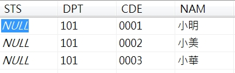

這一篇紀錄一下 C# 的 Dictionary 一部分的用法
本篇文章是以 WinForm 專案下去實作的
首先，可以看到資料表有四個欄位

然後新建一個 cs 檔
這個 cs 檔中可以看到有四個屬性
這四個屬性的名稱剛好就是資料表中四個的欄位名稱
1 | class EmployeTest |
2 | { |
3 | |
4 | /// <summary>註記</summary> |
5 | internal string STS { get; set; } |
6 | /// <summary>部門</summary> |
7 | internal string DPT { get; set; } |
8 | /// <summary>代號</summary> |
9 | internal string CDE { get; set; } |
10 | /// <summary>姓名</summary> |
11 | internal string NAM { get; set; } |
12 | |
13 | |
14 | public EmployeTest() |
15 | { |
16 | STS = string.Empty; |
17 | DPT = string.Empty; |
18 | CDE = string.Empty; |
19 | NAM = string.Empty; |
20 | } |
21 | |
22 | public void DataRowToObject(System.Data.DataRow dr) |
23 | { |
24 | STS = dr["STS"].ToString(); |
25 | DPT = dr["DPT"].ToString(); |
26 | CDE = dr["CDE"].ToString(); |
27 | NAM = dr["NAM"].ToString(); |
28 | } |
29 | } |
新增一個 Dictionary 並在 value 裡放進我們剛建好的 class
1 | Dictionary<string,EmployeTest> employes=new Dictionary<string,EmployeTest>(); |
然後在查詢資料表的資料並放到 DataTable 裡
這邊用 foreach 去取得 DataTable 內的資料
1 | EmployeTest employe; |
2 | //這裡的 dt 就是已取得資料的 DataTable |
3 | foreach (DataRow dr in dt.Rows) |
4 | { |
5 | employe = new EmployeTest(); |
6 | employe.DataRowToObject(dr); |
7 | |
8 | if (!employes.ContainsKey(employe.CDE)) |
9 | { |
10 | employes.Add(employe.CDE, employe); |
11 | } |
12 | } |
這樣做有什麼好處呢?
這樣可以很直覺的去知道欄位的名稱
也可以節省資料庫的 Loading
而且如果需要去做 Update 或是 Insert 的時候
可以像
主程式中
1 | employe.DPT="101"; |
2 | employe.CDE="0004"; |
3 | employe.NAM="小安"; |
4 | employe.Insert(); |
class中
1 | class EmployeTest |
2 | { |
3 | |
4 | ... |
5 | ... |
6 | |
7 | internal void Insert() |
8 | { |
9 | Insert INTO... |
10 | ... |
11 | ... |
12 | //在這個時候我的 NAM 已經是小安了 |
13 | SqlCommand.Parmaeters.AddWithValue("NAM",NAM); |
14 | } |
15 | } |
寫進資料表後
再寫上
1 | employes.Add(employe.CDE,employe); |
這樣我就不用再去查詢資料表
就有最新的資料了
不過如果是同時有多個使用者在維護的話，可能就需要改變一下寫法
以上純屬個人看法~
可能有更好的做法也說不定